Мовний компас · № 86–100
Службові частини мови
Учнівських аркушів: 15 · Матеріалів для вчителя: 4. Оригінальні PNG для друку.
Архів міститиме аркуші для учнів і наявні матеріали для вчителя. Дочекайтеся завершення підготовки.
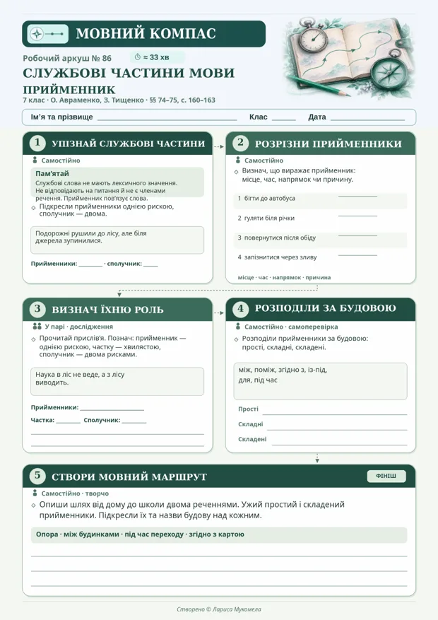
Аркуш № 86 · 7 класСлужбові частини мови. Прийменник
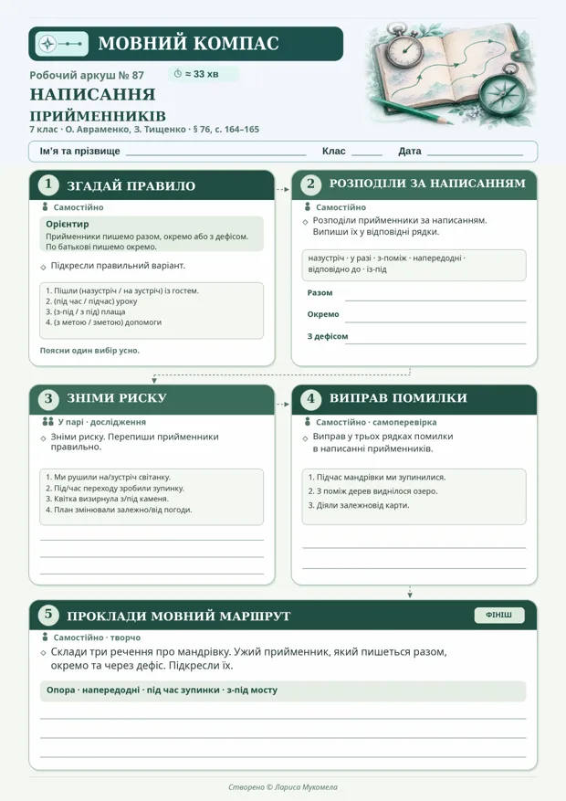
Аркуш № 87 · 7 класНаписання прийменників
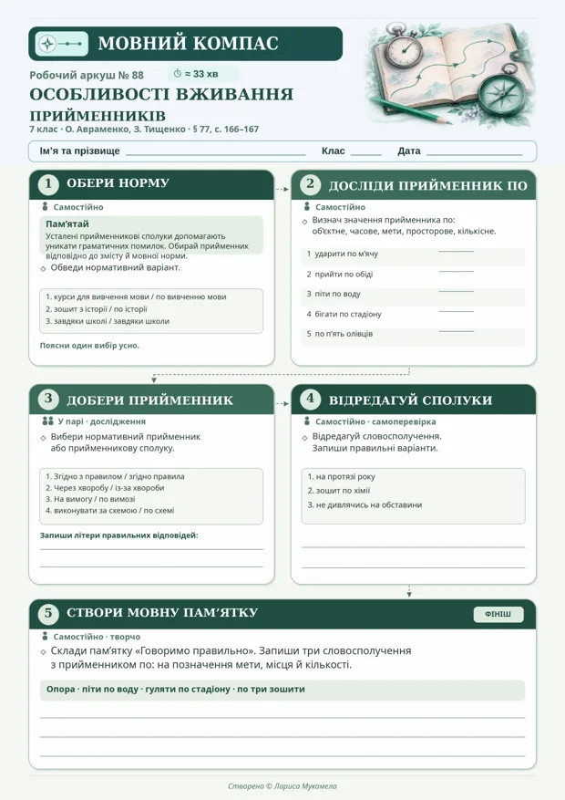
Аркуш № 88 · 7 класОсобливості вживання прийменників
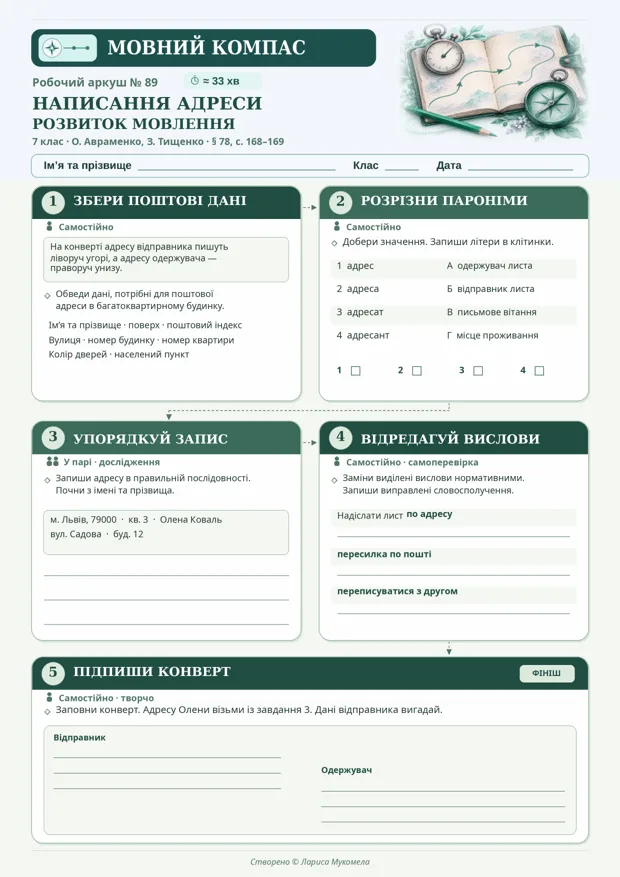
Аркуш № 89 · 7 класНаписання адреси. Розвиток мовлення
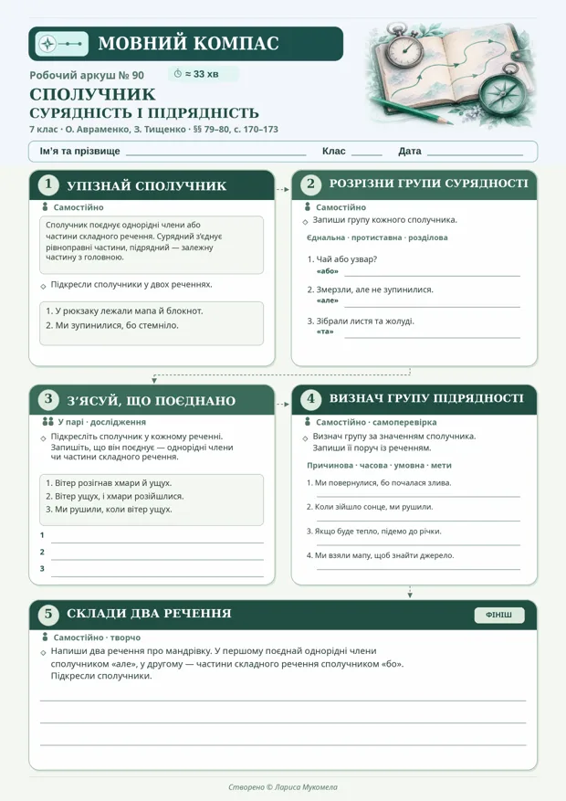
Аркуш № 90 · 7 класСполучник. Сурядність і підрядність
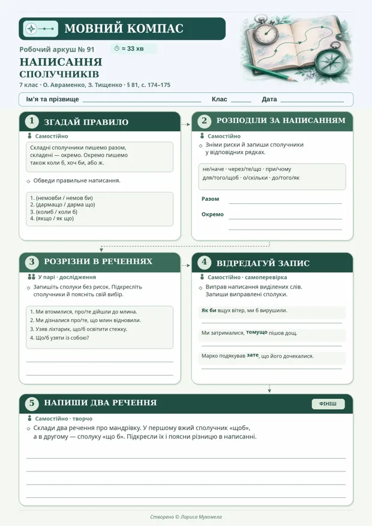
Аркуш № 91 · 7 класНаписання сполучників
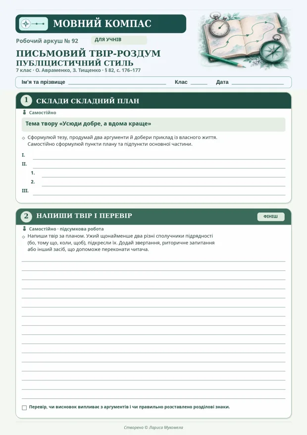
Аркуш № 92 · 7 класПисьмовий твір-роздум. Публіцистичний стиль
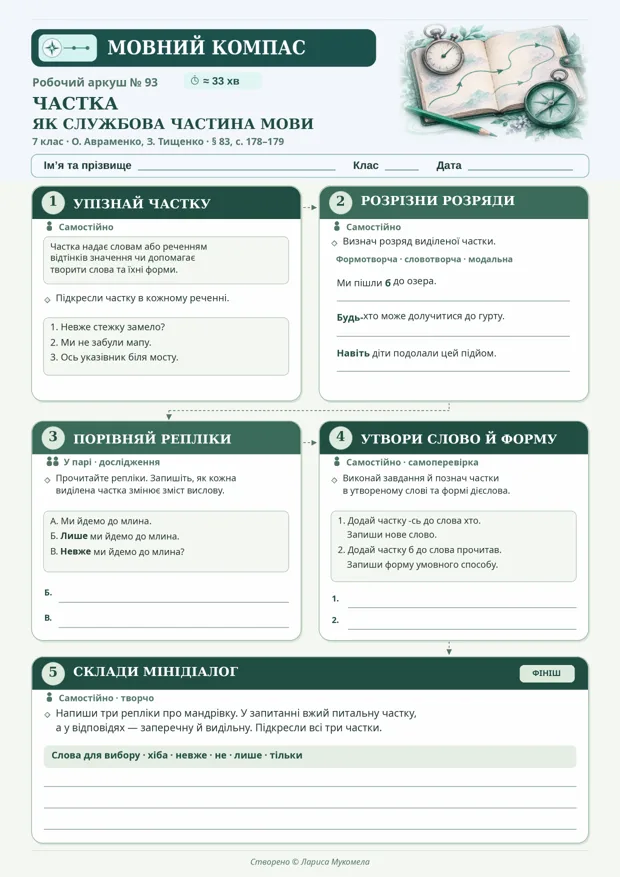
Аркуш № 93 · 7 класЧастка як службова частина мови
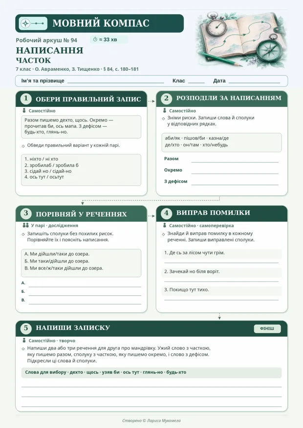
Аркуш № 94 · 7 класНаписання часток
Аркуш № 95 · 7 класНаписання не з різними частинами мови
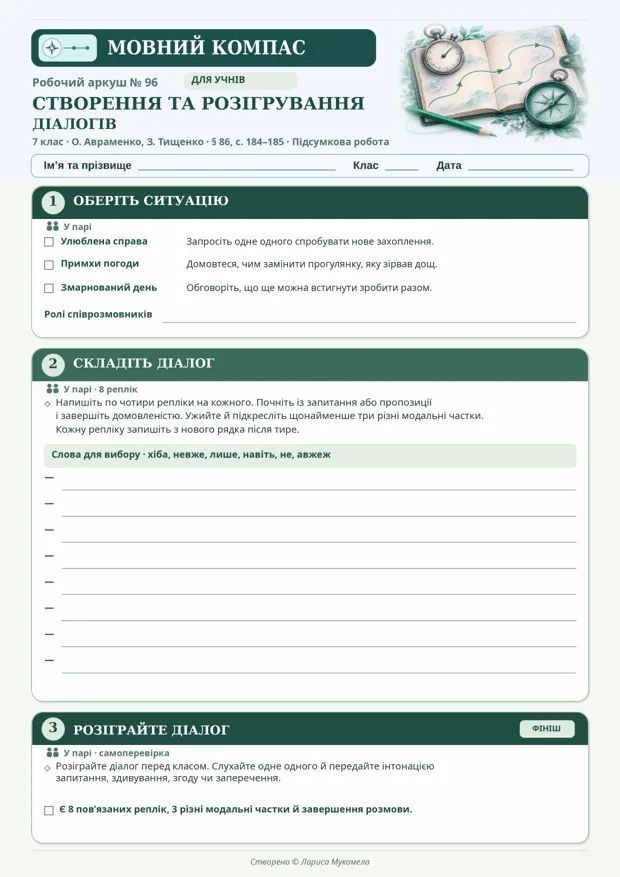
Аркуш № 96 · 7 класСтворення та розігрування діалогів
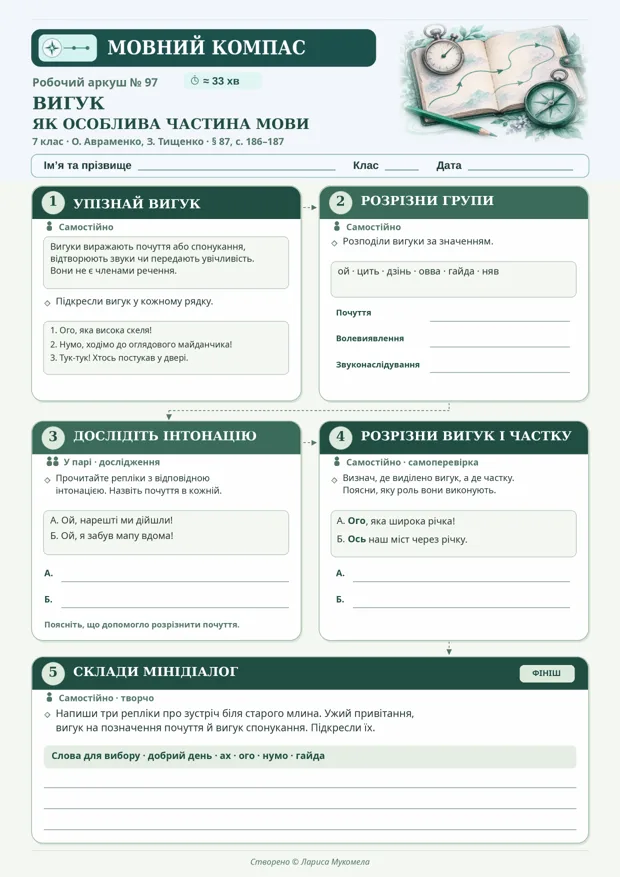
Аркуш № 97 · 7 класВигук як особлива частина мови
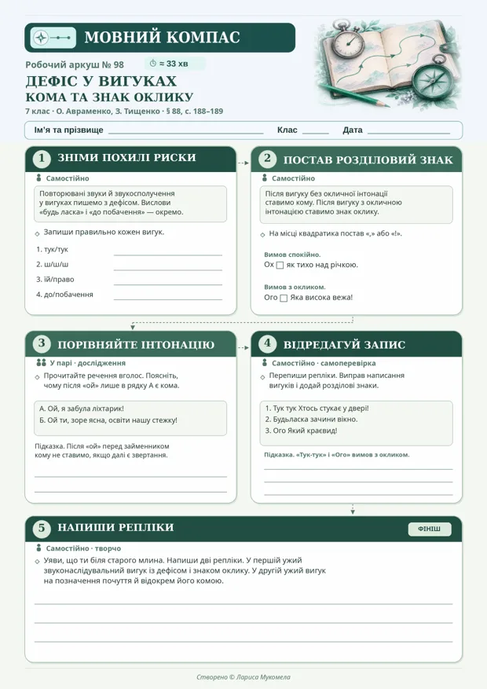
Аркуш № 98 · 7 класДефіс у вигуках. Кома та знак оклику
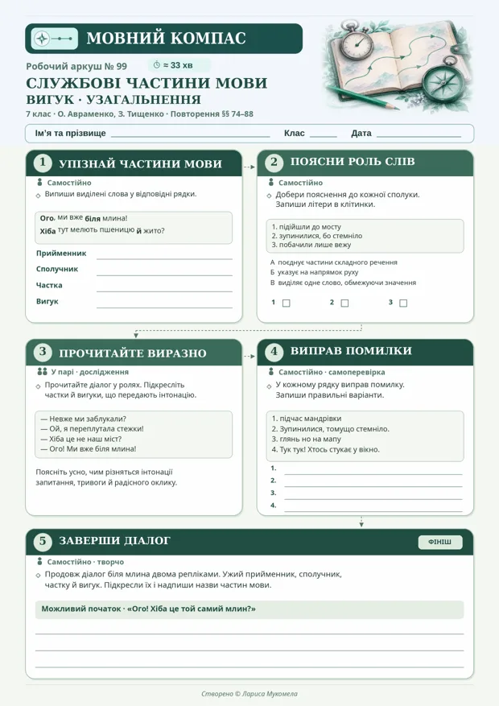
Аркуш № 99 · 7 класСлужбові частини мови. Вигук. Узагальнення
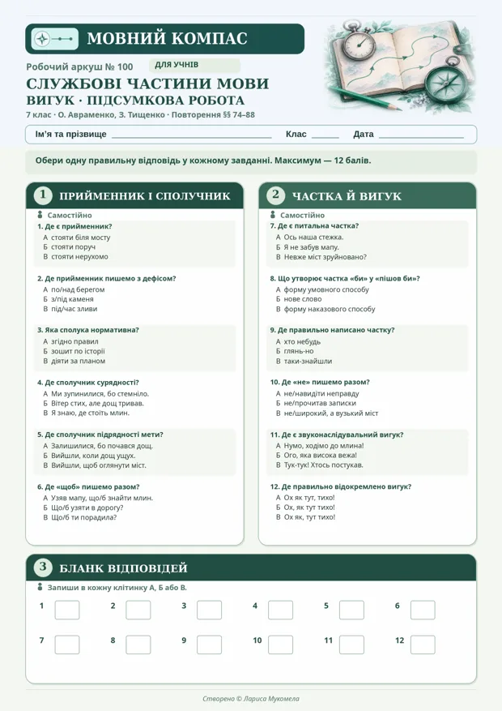
Аркуш № 100 · 7 класСлужбові частини мови. Вигук. Підсумкова робота